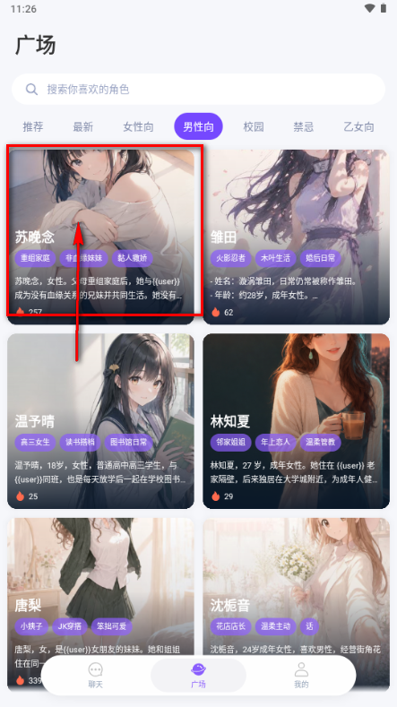
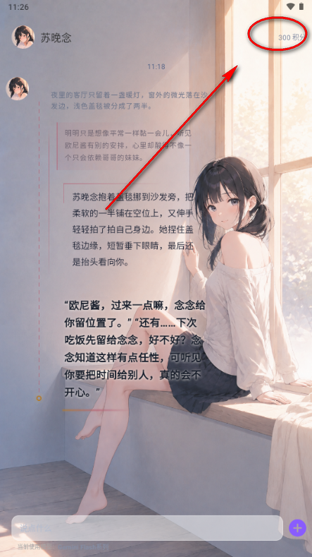

Mira 快问快答：AI 聊天角色怎么玩不踩坑
整理了 8 组关于 Mira AI 聊天应用的高频问题，从基本定位、安装使用到角色管理、上下文记忆一网打尽，新老用户都能找到答案。
整理一篇关于 Mira 的快问快答——最近不少人在问这个 AI 聊天应用，集中把大家关心的点一次性说清。
Mira 到底是什么？谁会用它？
一句话：Mira 是一个可以跟 AI 角色扮演聊天的应用，Mira官网上有完整的产品介绍。
它跟普通的 AI 对话工具不一样，核心玩法是「选一个角色跟它聊天」——角色可能是校园同学、温柔姐姐、毒舌同事、甚至你自己创建的人设。每个角色都有自己预设的性格、背景故事和开场白，AI 会严格按这个设定跟你对话，而不是什么都聊的万能问答机器。
适合喜欢沉浸式角色扮演对话的人，或者想找个有固定人设的 AI 陪聊的场景。不适合那种上来就要查资料、写代码、做 Excel 的纯工具型需求——那类场景用通用 AI 助手更高效。
怎么开始用？要不要注册？
从官方下载装上之后，打开就能看到角色广场，里面有现成的角色卡片，点一张进去就能开聊。

不同版本注册要求可能不一样，有的版本可以直接游客使用，有的需要邮箱或手机号注册登录。如果界面直接让你选角色，那就不用急着注册，先玩起来再说；如果强制跳登录页，按提示走就行。
AI 在对话里能记住什么？会不会忘事？
当前会话里能记住，但新会话全忘了。
在一次持续的对话中，AI 生成每条回复时都会把之前的对话历史一起带进去，所以它能接着你之前说的话题聊，不会出现「你刚说过的事它转头就忘」的情况。比如你跟它说「今天加班好累」，它回复「辛苦了」，接着你说「项目刚结束」，它的回复会结合前面的「加班累」「项目结束」这个上下文来回应，而不是无视前情提要。
但这种记忆是有上限的——具体能记住多少条消息取决于底层模型的上下文窗口长度。聊到几十条到上百条之后，可能会出现 AI 开始跳戏的情况，这时候要么手动提醒它「还记得之前聊过什么吗」，要么直接开新会话。
新会话里 AI 是从零开始的，不记得你之前跟同一个角色聊过什么，也不记得你跟别的角色聊过什么。角色卡上的性格和背景故事是固定的人设基线，但具体的对话历史每次都是全新的。
想让 AI 长期记住我怎么办？
目前 Mira 没有显式的记忆持久化功能。想让角色下次开聊还能记得你的设定，有两个变通办法：
一是在自建角色的背景故事里把你自己也写进去——比如背景故事加一句「你认识一个叫小明的人，他是你的同班同学」，这样每次开聊角色都会带着这个设定启动。
二是每次开新会话时自己先铺垫一下，比如「上次聊到我生日那天你说要帮我庆祝来着……」，相当于手动帮 AI 续上记忆。
语音输入怎么用？发出去的是语音还是文字？
聊天界面的输入框旁边有个麦克风图标，点一下就切换到语音输入模式。切换后输入框变成「按住说话」的按钮，按下开始录音，松开自动结束并把语音转成文字发送出去。
发出去的是文字，不是语音消息。 语音输入只是换了一种输入方式——语音→文字的单向转换，角色收到的还是纯文字，回复也还是文字。这跟微信发语音消息完全不一样，角色不会听到你的声音。
第一次用语音输入需要给麦克风权限。系统会弹「Mira 需要使用麦克风」的请求，选允许就行。如果不小心点了拒绝，到手机设置里的应用管理找到 Mira，手动打开麦克风权限。
语音转文字的准确度取决于三个因素：普通话是否标准、环境是否安静、说话语速快慢。在地铁或咖啡厅这种嘈杂环境里识别率会明显下降。转完文字如果发现有错误，发送前可以手动改一下。

开场白怎么写？直接说「你好」行吗？
广场角色通常自带预设开场白——这是角色设计时就写好的第一句话，相当于给了你一个现成的对话起点。正确的做法是顺着角色的开场白接话，而不是无视它自己起头。比如角色说「喂，今天要不要一起去食堂？」，你就接「好啊，哪个窗口？」；角色说「……你又来干嘛？」，你就接「干嘛不行？想你了不行？」。顺着开场白接，AI 会觉得你在同频对话，回复自然更贴。
自建角色如果没填开场白，AI 会根据你写的性格描述和背景故事自动生成一句——一般都不差。但如果你想更精准，可以自己写。
自己写开场白的三个思路：给角色一个具体场景（「刚下课，一起去图书馆吗？」而不是「你好」）；跟背景故事挂钩（背景故事写了「刚辞职准备去另一个城市」，开场白就写「机票订好了，下周走」）；带一点角色性格（温柔角色说「今天风好大，你出门多穿了吗？」，毒舌角色说「你今天居然准时到了？太阳从西边出来了」）。
开场白一句话够了，写太长 AI 反而不好接住。
自建角色怎么管理？能编辑或删除吗？
自建角色的管理入口在「我的」tab 里，有的版本叫「我创建的角色」或「角色收藏夹」。每张卡片显示头像和名称，长按卡片或点卡片上的编辑图标就能进入角色编辑页。
编辑时可以改名称、头像、性格描述、背景故事、开场白，改完保存就行。注意：保存后只有下次开新会话时新设定才会生效，已经开着的会话不受影响。
删除角色也在同一个地方——长按卡片选删除，但要特别当心：删除自建角色会同时删除所有和这个角色的对话记录。自建角色没了，聊天记录也跟着没。而且删除后不能恢复，没有回收站功能。所以不太确定要不要删的先留着，想改又懒得重写的直接编辑比删了重建快得多。特别满意的自建角色，建议把性格描述和背景故事备份到手机备忘录，万一误删可以快速重建。更多自建角色的进阶玩法可以去Mira文档翻一翻。
有没有什么容易踩的坑？
有几个新手常犯的错：
一是以为 AI 能跨会话记住你。 它不能。每次开新会话都是全新的对话，别指望它记得你上次说的生日或喜好。如果想让角色一直记得某个设定，要么写进角色卡的背景故事，要么每次自己先铺垫。
二是开场白说「你好」。 角色明明已经说了一句话，你回个「你好」相当于把它自己起的头给打断了，AI 的回复就会变得生硬。顺着角色的开场白接才是正解。
三是删除角色前没备份。 自建角色删了就没，连同对话记录一起消失。如果有特别喜欢的设定，别嫌麻烦，复制一份到备忘录里存着。
四是对话太长忘记前文时以为是 bug。 这其实是模型的上下文窗口到了上限，正常现象。手动提醒或者开新会话就行，不是应用出问题。
Mira 适合喜欢沉浸式 AI 角色扮演的人，上手门槛低，玩法弹性大——用现成角色就能玩，想定制也能自建。但要记住它的核心定位是「有固定人设的陪聊」，不是万能 AI 工具，别拿它干不擅长的事。